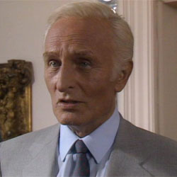

| Home | The Doctors | The Companions | The Villains |
|
|||
De Flores De Flores is a Neo-Nazi, based in South America, who aims to establish a Fourth Reich, aided by a powerful Time Lord weapon, known as the Nemesis, as seen in Silver Nemesis(1988). He leads a group of paramilitary men against Lady Peinforte, a group of Cybermen and the Seventh Doctor, who all vie to control the Nemesis. He possesses the bow – part of the Nemesis as it was in its statue form – which he and his men reunite with the statue body when it falls to England in a comet in 1988. After allying himself with the Cybermen, De Flores is killed by the Cyber Leader when he outlives his usefulness to them. |